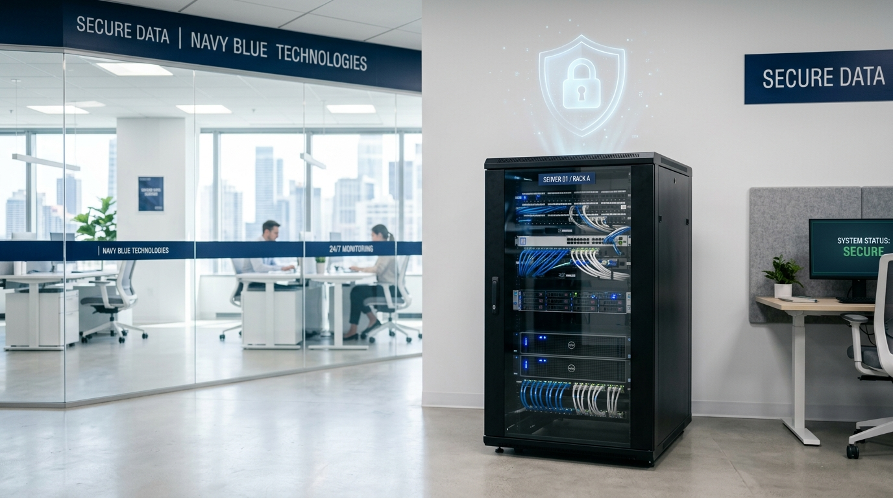

Optimice sus procesos industriales, consulte manuales técnicos en segundos y automatice reportes de calidad sin que un solo byte de su información confidencial salga de su fábrica.

Las plataformas comerciales de IA utilizan sus datos confidenciales (planos, secretos industriales, certificaciones ISO) para entrenar modelos públicos. Su fábrica no puede correr ese riesgo.
Analizamos sus procesos operativos y determinamos qué cuellos de botella pueden ser resueltos con IA local. Le entregamos la arquitectura de hardware exacta que necesita comprar.
Instalamos y configuramos modelos de lenguaje corporativos en sus servidores. Creamos sistemas que leen sus documentos técnicos para asistir a los operarios en tiempo real.
No solo un chat. Construimos flujos de trabajo donde la IA interactúa con su ERP (como SAP o Odoo) para automatizar órdenes de compra, reportes de turnos y control de inventarios.